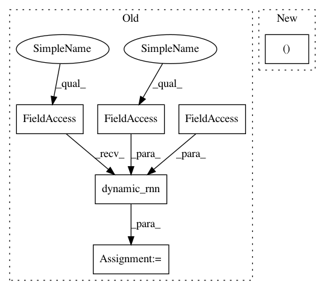

cb112c4dfca92159520bb7b2c8a95a94ab38239c,python/eight_mile/tf/layers.py,LSTMEncoder,call,#LSTMEncoder#Any#,328
Before Change
def call(self, inputs):
inputs, lengths = tensor_and_lengths(inputs)
rnnout, hidden = tf.nn.dynamic_rnn(self.rnn, inputs, sequence_length=lengths, dtype=tf.float32)
return self.output_fn(rnnout, hidden)
@property
def requires_length(self):
After Change
outputs = rnn(inputs, mask=mask)
inputs = outputs
rnnout, h, c = outputs
return self.output_fn(rnnout, (h, c))
@property
def requires_length(self):
In pattern: SUPERPATTERN
Frequency: 3
Non-data size: 6
Instances
Project Name: dpressel/mead-baseline
Commit Name: cb112c4dfca92159520bb7b2c8a95a94ab38239c
Time: 2019-10-17
Author: dpressel@gmail.com
File Name: python/eight_mile/tf/layers.py
Class Name: LSTMEncoder
Method Name: call
Project Name: dpressel/mead-baseline
Commit Name: 17e198bcc50b15e0d521c71f25dd76f1cc840754
Time: 2019-09-25
Author: dpressel@gmail.com
File Name: python/eight_mile/tf/layers.py
Class Name: LSTMEncoder
Method Name: call
Project Name: dpressel/mead-baseline
Commit Name: cb112c4dfca92159520bb7b2c8a95a94ab38239c
Time: 2019-10-17
Author: dpressel@gmail.com
File Name: python/eight_mile/tf/layers.py
Class Name: LSTMEncoder
Method Name: call
Project Name: dpressel/mead-baseline
Commit Name: 17e198bcc50b15e0d521c71f25dd76f1cc840754
Time: 2019-09-25
Author: dpressel@gmail.com
File Name: python/eight_mile/tf/layers.py
Class Name: LSTMEncoderWithState
Method Name: call